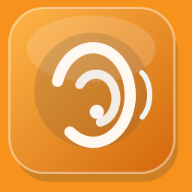

PC가 꺼져도
회의를 기록하세요.
녹음·전사문·업무는 이 기기에 저장됩니다. 무료 기기 내 전사 모델을 준비할 수 있으며 실제 휴대폰의 오프라인 성능은 시험이 필요합니다.
00:00녹음 중 · 화면을 켜 두세요
오프라인 준비
앱 저장 상태 확인 중
내 회의 기록
기록을 불러오는 중입니다.
전사 모델을 먼저 준비하세요.
회의 요약 초안
빠른 주제 분류 초안입니다. 진술·결정·담당자는 원음과 참석자에게 확인하세요.

녹음·전사문·업무는 이 기기에 저장됩니다. 무료 기기 내 전사 모델을 준비할 수 있으며 실제 휴대폰의 오프라인 성능은 시험이 필요합니다.
앱 저장 상태 확인 중
기록을 불러오는 중입니다.
전사 모델을 먼저 준비하세요.
빠른 주제 분류 초안입니다. 진술·결정·담당자는 원음과 참석자에게 확인하세요.